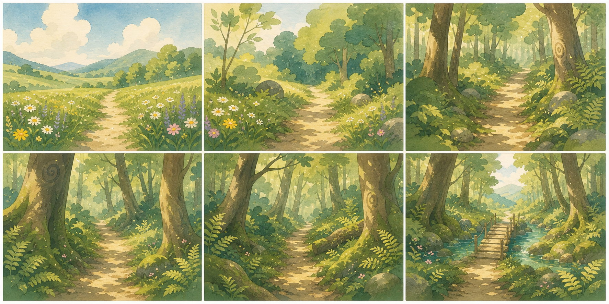
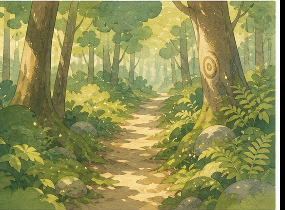
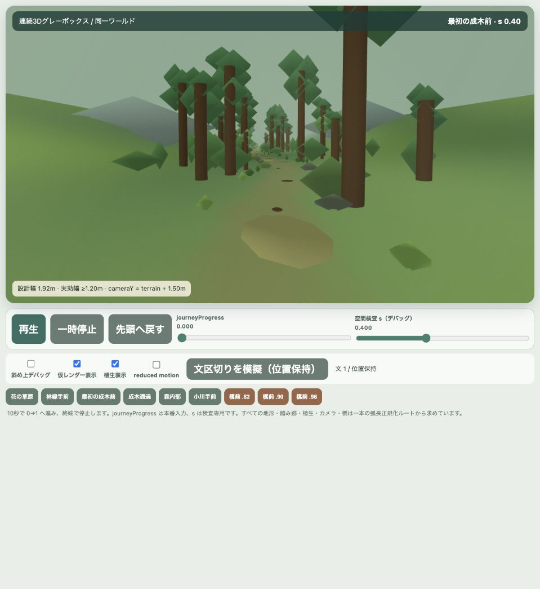
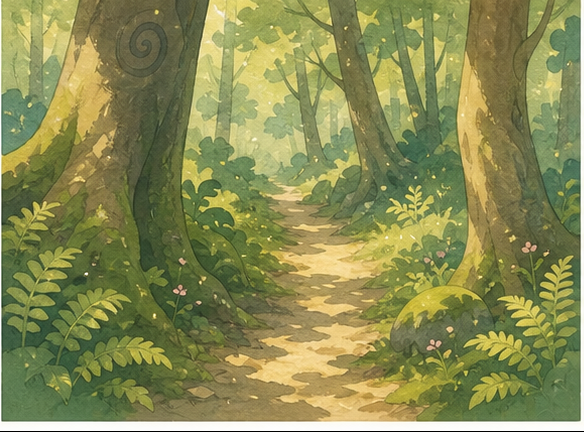
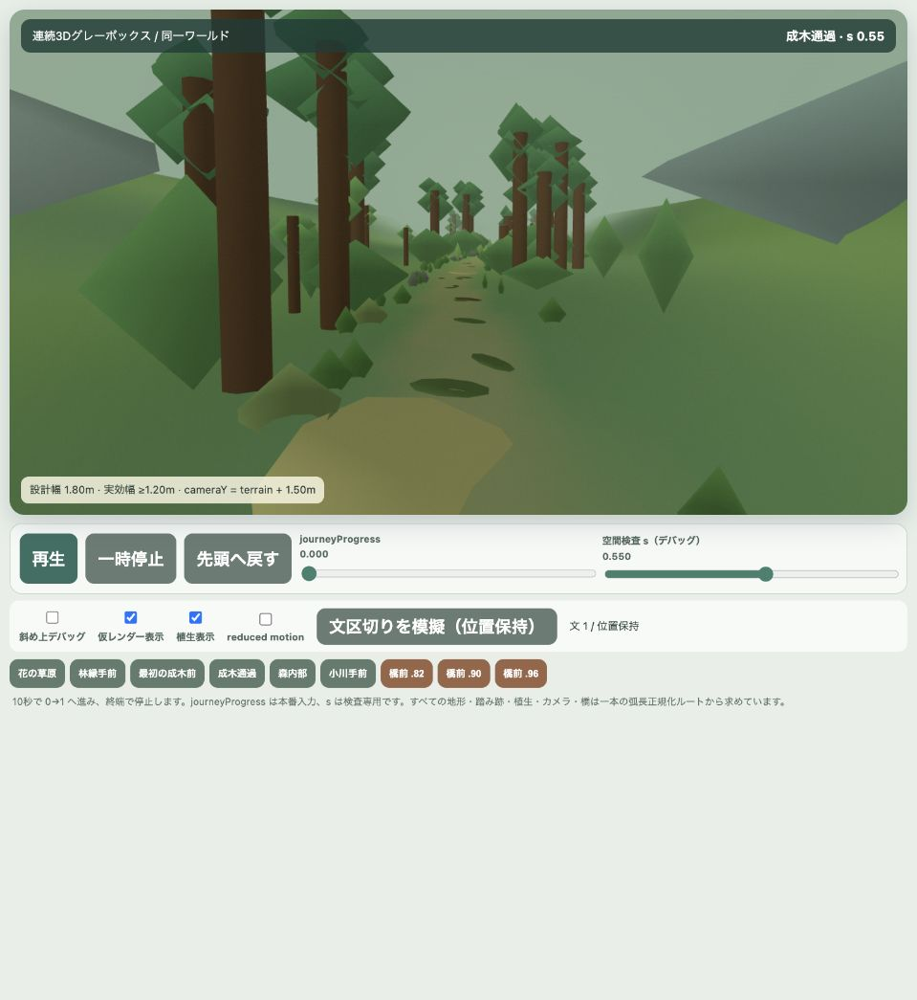
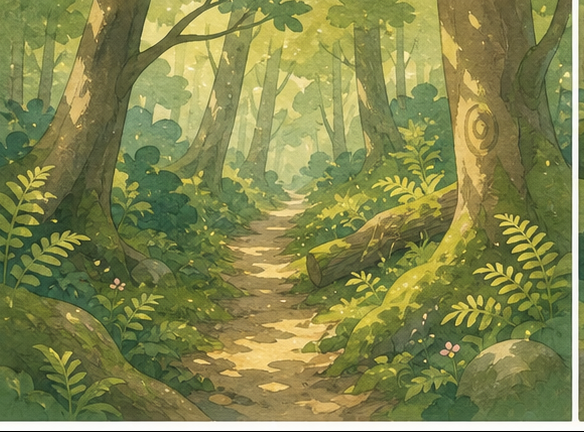
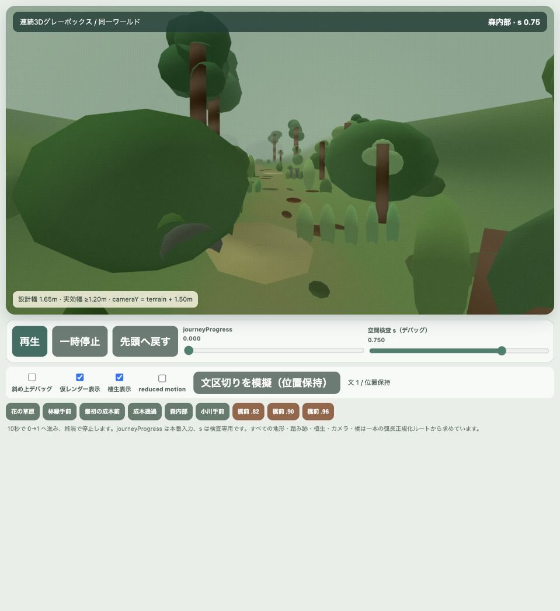
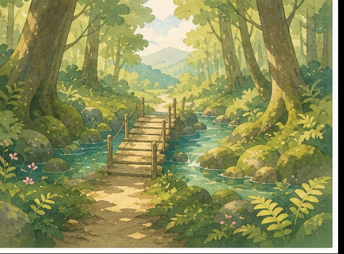
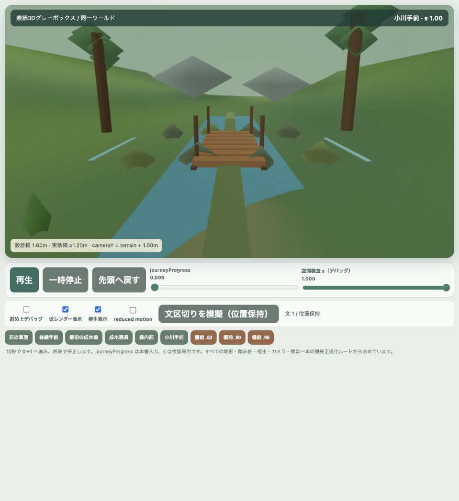

1. 現在の決定
meadow-to-forest-threejs-v1.html で全区間の画面反復を進めている。ゲーム本体統合はまだ行わない。旧版を停止した理由は、ルート同期や地形追従などの技術契約は前進した一方、承認済みスケッチが要求する「柔らかな森」「有機的な樹木」「湿った林床」「水彩の大きな色面」が画像で成立しなかったためです。その後、完成イラストを雰囲気資料へ位置づけ直し、実装用絵コンテv2を作成してThree.js版へ移行しました。
{kind=link}
3. 承認済みのビジュアル方向
簡略化した日本画調 × 透明水彩 × 控えめなファンタジー。 細密画や写真表現ではなく、大きな色面、余白、非対称配置、簡略化した植物を使います。黒い輪郭は立てず、2〜3段階の柔らかな陰影、薄い紙目、輪郭付近だけのにじみ、青緑の距離霧で奥行きを作ります。

目指すもの
- 枝先にまとまる3〜6個の樹冠塊
- 暖かな樹皮、翡翠の苔、青緑の霧
- 高木・若木・低木・草本・林床の5層
- 大きく柔らかな木漏れ日と空気遠近
- 少数の光粒による控えめな幻想性
避けるもの
- 棒状の幹＋球／菱形の葉
- 等間隔の並木、左右対称の門
- 写真樹皮、写実PBR、強い鏡面
- 黒いアウトライン、ネオン発光
- 高周波な個別葉・花・全面ノイズ
4. ステージ1で扱う範囲
対象は 花の草原 → 林縁 → 最初の成木前 → 成木通過 → 森内部 → 小川手前 の一本の連続空間です。10秒は方向確認用の短縮デモで、本番ステージ時間ではありません。
| s | 地点 | 一枚で読める必須要素 |
|---|---|---|
| 0.00 | 花の草原 | 広い空、細い踏み跡、少数の花、遠い林縁と山 |
| 0.20 | 林縁手前 | 若木・低木・岩、減る花、近づく森 |
| 0.40 | 最初の成木前 | 片側の近景成木、次に通る二本、苔・落葉・岩・シダ |
| 0.55 | 成木通過 | 前コマと同じ二本を非対称に通過、頭上の樹冠、曲がる細道 |
| 0.75 | 森内部 | 5層、倒木／大岩、湿った林床、中央を外した奥の光 |
| 1.00 | 小川手前 | 土の取り付き、小川、5〜8枚の橋板、対岸路、明るい抜け、遠山 |
5. 移動・経路・カメラの技術契約
同一空間を前進する
- 背景画像の交換、クロスフェード、暗転、霧の壁、ポータルでは繋がない。
- 文が終わっても位置を戻さず、ステージ全体の
journeyProgressを0〜1で単調増加させる。 sentenceProgressを旅座標へ使わない。入力停止時も到達位置を保持する。
type JourneySceneInput = {
journeyProgress: number // 0..1、文をまたいで単調増加
isTyping: boolean
typingPace: number // 揺れ・風・粒子の強さだけ
reducedMotion: boolean
}一本のルートを唯一の情報源にする
弧長正規化したワールドスプラインから、カメラ、先読み、地形上のtrail mask、道幅、植生配置、橋中心と向きをすべて求めます。処理ごとの独自sin曲線や目測中心は禁止です。同じ s とシードから同じ画面を再現できることが必要です。
獣道と地形
- 道は別の長方形メッシュではなく、地形上の踏圧、土色、草・苔・落葉の密度差で表す。
- 幅は草原2.2〜2.5m → 林縁1.8〜2.2m → 森1.5〜1.8mへ連続的に狭める。
- 道中央にも苔5〜12%、落葉8〜18%、短草3〜8%を非周期に戻す。
- 根・草・シダを左右から非対称に侵入させるが、実効幅は重点区間で約1.2m以上を保つ。
カメラ
- 一人称、地上約1.5m、35mm換算28〜35mm相当。道に沿って緩く蛇行する。
cameraY = terrainHeight(cameraX, cameraZ) + eyeHeight。注視点も先読み地点の地形高へ追従。- 基準姿勢は
sだけから決定。歩行揺れは後段の一時オフセットとして分離。 - reduced motionでは揺れ・強い視差・粒子を減らすが、場所と場面内容は変えない。
橋
カメラは水際2.5〜4m手前。橋は中央から5〜12%ずらし、5〜8枚の板を台形の連なりとして見せます。水路は進行方向を横断し、両岸と対岸へ続く細道を同時に読み取れる構図にします。橋中心から左右3m以内へ太い幹を置きません。
6. 試した方式と、過去試作から継承するもの
2D背景／クロスフェード案
複数背景を重ねるだけでは「森から海へ歩いて出る」空間移動より、場面転換に見えやすいと判断。通常移動の本案から除外しました。
Three.js旧技術試作
水彩テクスチャ、紙目、距離霧、草・岩・倒木・小川、簡易橋などを確認。見た目の長所はある一方、森内部中心、独立曲線、固定カメラ高、終端ループのため完成土台にはしません。
Raw WebGLグレーボックス
共通ルート、弧長LUT、道幅、地形追従、進捗停止、デバッグ表示を単体HTMLで検証。構造面は前進しましたが、階層モデル・材質・影・5層の反復に向かないことが判明しました。
継承する長所
固定シード、非対称配置、低周波な林床色面、暖色樹皮＋青緑霧＋黄緑木漏れ日、近景を濃く遠景を低彩度にする空気遠近、複数樹冠塊という考え方。
7. Raw WebGL版の画像レビュー
以下は同一版から撮影したQAです。s=0/.2/.55 は構造グレーボックスとして成立。s=.4/.75/1 は、事前に定義した画面設計と画像基準に対して不合格です。
s=.40 — 最初の成木前 不合格


s=.55 — 成木通過 構造合格


s=.75 — 森内部 第一ゲート不合格


- 空が画面の約半分を占め、林冠が頭上で部分的につながらない。
- 高木が棒状の幹＋単純な葉塊に見え、根元・主枝・枝先の関係がない。
- シダ、落葉、苔、倒木が小さく、5層の湿った森として読めない。
- trail maskの明色面が広く、公園道に近い。根と草の侵入も弱い。
- 紙目・材質差・木漏れ日・霧はコード上にあっても、通常画像で十分に読めない。
s=1.00 — 小川手前 不合格


特に、巨大な空白の空、水の単純平面、認識しにくい対岸路、弱い明るい抜け・遠山が設計条件に反します。橋だけを整えても合格にはなりません。
8. Raw WebGL拡張とThree.jsの比較
| 評価軸 | Raw WebGLを拡張 | Three.jsへ移行 |
|---|---|---|
| 共通ルート契約 | 現状を維持可能 | 移植可能 |
| 階層樹木 | Transform・枝接続を自作 | scene graphで直接表現 |
| 5層の反復 | 低速。描画基盤の開発が主作業化 | 高木・若木・低木・草本を別Groupで調整 |
| 影・霧・材質・ポスト | framebuffer、shadow、shader variantを自作 | 標準機能を土台に水彩方向へ抑制 |
| s=.75到達見込み | 8〜15実働日程度、確度は低〜中 | 基盤2〜4日＋承認候補3〜6日、確度は高い |
| 通常HTML提出 | 一枚を維持できるが肥大化 | 開発時は分割、提出時にbundleして一枚化可能 |
| 結論 | 非推奨 | 推奨 |
Three.jsのPBR基盤を使うことは写実化を意味しません。シーングラフ、geometry、shadow、fog、render target、material管理だけを土台にし、写真テクスチャや強い鏡面は使わず、簡略日本画・水彩調へ制御します。
9. 推奨する再開手順
- 現Raw WebGL HTMLとQAを比較資料として凍結する。
- Three.jsのバージョンをローカル固定し、開発時はHTML・scene moduleを分ける。
- 共通スプライン、弧長LUT、
trailWidth(s)、terrainHeight、進捗UI、デバッグ契約だけを移植する。 - s=.75周辺25〜35mだけを作る。全長や橋はまだ作らない。
- 階層樹木2〜3種、若木、低木、扇状シダ、苔岩、倒木、湿った林床を配置する。
- 承認スケッチ下中央と同じsの画像を横並びにし、完成条件を一項ずつ判定する。
- ユーザー承認後だけ、同じscene graphで残り5コマと全長ルートへ展開する。
- 6コマと橋前デバッグを再撮影し、10秒停止・スクラブ再現・文区切り保持を確認する。
- 提出時に依存をbundleした通常HTMLを生成し、ネットワークなしで開けることを確認する。
10. 完成・不合格の基準
s=.75単独ゲートの合格条件
- 根元、先細る幹、主枝、枝先の3〜6樹冠塊が一樹として読める。
- 高木、若木、低木、草本、林床の5層が通常サイズの画像で区別できる。
- 苔、落葉、シダ、岩、倒木が湿った林床を作り、道中央にも一部戻っている。
- 空の抜け30〜45%。樹冠が部分的に頭上を覆うが、水平天井にはならない。
- 中央を少し外した光、青緑の距離霧、柔らかな陰影、薄い紙目が読める。
- 実効幅1.2m以上の細い獣道が進行方向を示し、公園道路に見えない。
- 承認スケッチと横並びにし、構図意図が一致する。
全区間の完成条件
- 草原から森、小川までが同じ空間の連続移動に見える。
- s=.4で通過対象が分かり、s=.55で同じ木を通過する。
- s=1で両岸、橋板、対岸路、明るい抜け、遠山が一枚で読める。
- 文区切りで位置が戻らず、10秒デモは終端で停止する。
- カメラ・道・植生・橋が共通中心線と地形高に同期する。
- UI想定域に高周波な細部が集中せず、reduced motionでも場所を理解できる。
即時不合格
背景交換／クロスフェード、広い道路、左右対称の並木、棒＋球の木、巨大な樹冠板、単色の林床、橋だけで対岸路がない、写真PBR、黒輪郭、数値だけ満たして基準画像の構図意図がないもの。
11. 意図的に未着手・先送りしている事項
- 残り5地域、36話のイベント差分、全ステージ共通エンジン
- ゲーム本体へのReact統合、本番保存データ接続
- キャラクター、動物、報酬アイテムの3Dモデル
- アイテム発見演出（将来は「地面の光 → タイピング成功 → 2D報酬」を1種だけ検証）
- 自由移動、衝突、戦闘、物理演算
- 高解像度手描き地面・樹皮・樹冠テクスチャ、最終シェーダー
- 完成版の水面、岸、橋材、風、光粒、地域別カラーグレーディング
- iPad向けLOD・負荷最適化（初期ゲートでは品質優先）
12. 関連ファイル
正本・設計
{kind=link}
{kind=link}
{kind=link}
{kind=link}
Git上の主要な節目: b58fd28 3Dシーンブリーフ、312fe52 レンダラー検討整合、03b8d5e 旧技術試作保存、ca69b14 6コマ画面設計。Raw WebGLグレーボックスとQAは、品質版ではなく比較・構造検証資料として本書とともに保存します。
13. 次セッションへ渡す依頼文テンプレート
作業前に README.md、docs/3d-renderer-handoff.html、
docs/3d-scene-production-lessons.md と対象区間の制作ブリーフを最後まで
読んでください。
現行の比較対象は artwork/renderer-prototypes/
meadow-to-forest-threejs-v1.html です。Raw WebGL版と旧Three.js試作は
比較資料として凍結し、品質版へ継ぎ足さないでください。
次の「木漏れ日の森 → 星見の山道」を作る場合、実装前に専用ブリーフと
実装用絵コンテを作ってください。完成イラストは雰囲気資料として扱い、
再利用モデル数、土地の占有範囲、カメラ、空、霧、光、遠景を実装用
絵コンテで決めてください。
歩行ルートの周囲だけを作らず、カメラ視錐台の外まで地形と環境を
広げてください。開始地点から次の土地が点や列ではなく面積を持って
見え、区間終端の両側と向こう側にも現在地の環境が続くようにします。
空シェーダー、距離霧、環境光、主光源、露出は同じ土地ブレンド値で
連続変化させてください。森の次は山なので、海は物語上の見通し地点まで
大きく見せません。
確認再生とゲーム歩行再生を分け、typingPaceは足取り、風、粒子などの
演出だけへ使用してください。旅座標と前進距離はjourneyProgressだけで
決定し、文区切りでも位置を戻しません。
ストーリースクリプト接続前は背景と環境小物を中心に作り、台詞、動物、
報酬、伏線記号を先回りして焼き込まないでください。